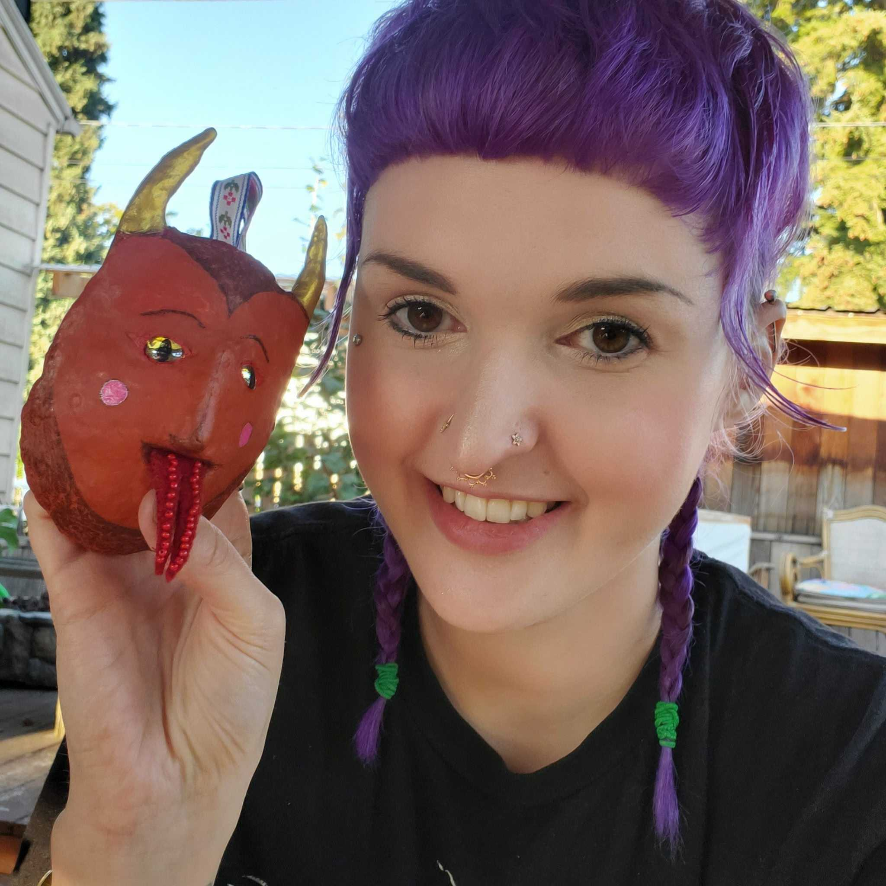

Hi! I'm Corinne. I've worked as a professional astronaut, tightrope walker, secret agent, and much more. But now I want to show you something that's very important to me: My art! I first heard about art when I saw the word "fart" written on a bathroom stall wall. I removed the "f" by crossing it out with a sharpie and went "whoa". So now I want to pursue that as a job because it's very fulfilling. Support my art by sending me lots of money and stuff please!